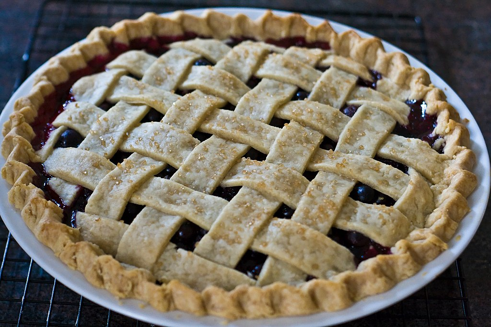

Blueberry Pie

Photograph of a blueberry pie by Andrew Malone, CC BY 2.0 , via Wikimedia Commons
Description
Blueberry pie is a summer staple. Pro tip from one who knows, serve à la mode.
Ingredients
- Pie dough
- Blueberries
- Sugar
- Lemon juice
- Beaten egg (for egg wash)
- Fancy sugar for topping
Steps
- Preheat the oven to an ungodly temperature when it's already hot af.
- Roll out the pie dough into a pie pan.
- Add sugar and lemon juice to blueberries and let sit.
- Blind bake bottom crust for 15 minutes.
- Add blueberries and juices to blindbaked crust.
- And top crust, making it as fancy you'd care to make it.
- Brush on egg wash to the top crust.
- Sprinkle fancy sugar on top crust.
- Finish baking and eat.